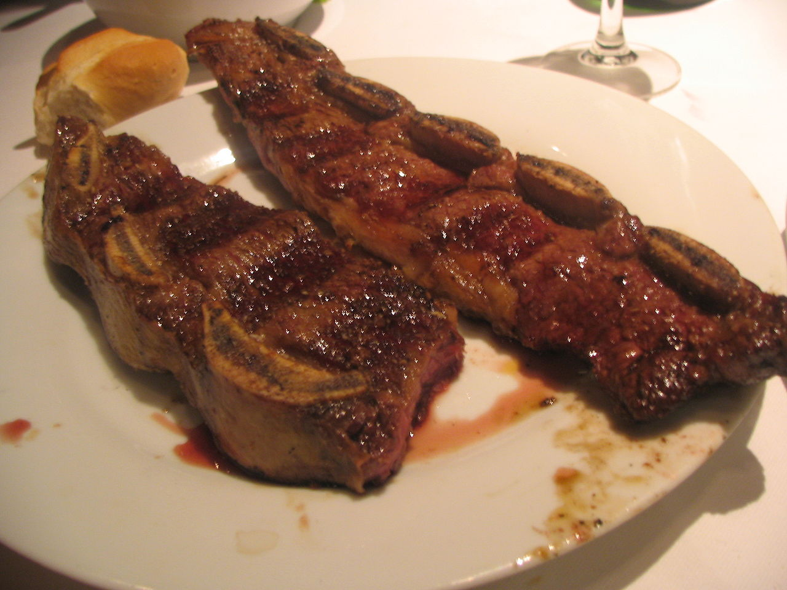

Asado de tira ancha
El asado de tira ancho constituye el corte tradicional del asado argentino. Resulta ideal que tenga entre 8 y 10 centímetros de ancho. La carne de ternera, novillito o novillo, siempre es tierna y sabrosa.

- Preparacion: 10 min
- Cocción: 60 mins
- Adicional: 0 mins
- Total: 70 mins
- Porciones: 4
Ingredientes
- Asado de tira ancha: 2 kilos
- Sal o salmuera a gusto
Pasos
- Regule la parrilla a unos 20 cm de altura con una cantidad de brasas que brinden un calor moderado pero suficiente para dorar la tira lentamente.
- Ponga la tira primero con el hueso hacia las brasas y cocínela durante 45 minutos a 1 hora. Luego sale con sal o salmuera la cara superior de la grasa.
- Cuando aparezcan gotitas en los costados de los huesos y la carne se desprenda de los mismos (en este momento la cara superior de la grasa ya debería estar tibia), gire de costado la tira de asado y cocínela entre 5 y 10 minutos de cada lado. Aumente la intensidad de calor.